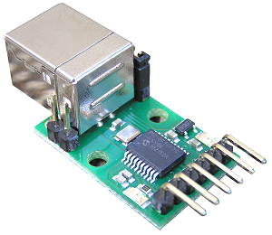
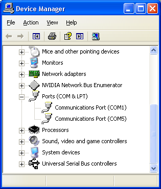
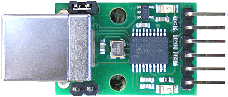
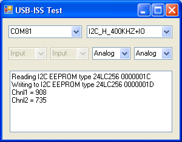
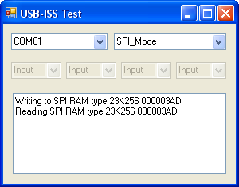
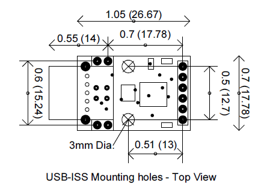

USB-ISS Multifunction USB Communications Module
Technical Specification
Overview
The USB-ISS Multifunction USB Communications Module provides a
complete interface between your PC and the I2C bus, SPI bus, a Serial port
and general purpose Analogue Input or Digital I/O. The module is powered
from the USB. Operating voltage is selectable between 3.3v and 5v. and can supply up to
80mA at 5v for external circuitry from a
standard 100mA USB port.
| USB-I2C | USB-ISS |
 |
|||
| USB Powered | |||||
| Support I2C at 100khz | |||||
| Support I2C at 20khz-1000khz | Fixed 20,50,100,400 &1000khz | ||||
| I2C + I/O | |||||
| SPI Mode | 24khz to 3Mhz | ||||
| Serial Mode | 300baud to 3Mbaud | ||||
| I2C Direct | Used to build custom I2C sequences | ||||
| Bootloader for user updates | Uses Microchip Bootloader | ||||
| Supply power to external Circuit | Up to 80mA for USB-ISS | ||||
| 5v operation | |||||
| 3.3v operation | |||||
| Mounting holes on PCB | |||||
Documentation
This documentation is divided up into 6 pages.
1. This page describes the connections to the USB-ISS, the USB
driver installation and setting of the USB-ISS operating modes.
Five further pages describe the operational commands and the Boot-Loader.
2. I2C Operation, describes all the I2C
commands available
3. SPI Operation, describes the format for
SPI communication
4.Serial Operation, describes how to send
and receive serial data.
5. I/O Operation, describes how to set
pins high/low and read digital or analogue inputs.
6. Boot Loader, describes how to update the
firmware in the USB-ISS.
First Step - Get The Drivers
Before connecting the USB-ISS module, you should download
the driver and unzip it to a temporary folder. Now connect the USB-ISS
module and navigate windows to the temporary folder and install the driver.
The USB-ISS will now appear as a COM port.
Which COM port?
After installing the drivers, and plugging in the USB-ISS module to a spare USB
port, you will want to know which COM port it has been assigned to. This will
vary from system to system depending on how many COM ports you currently have
installed. To find out where it is, right click on your "My Computer"
desktop icon and select "Properties->Hardware->Device Manager". Now scroll down and
open the "Ports (COM & LPT)" tab. You should see the USB serial
port listed - COM5 in the example below. If you want to change the COM port
number - just right click on it, select properties, select advanced and select
the COM port number from the available list. The COM port default will probably be set up for
9600 baud, 8 data bits, no parity and one stop bits, but what ever it is
just ignore it. These settings are not actually used because we have a
full 12Mbits USB connection right into the heart of the processor.

Connections
The diagram below shows the connections for the various modes.
| Power Link - Remove for 3.3v operation. | |||||||||||||||||||||||||||||||||||||||||
|
 |
|
||||||||||||||||||||||||||||||||||||||||
| Bootloader Link - Fit link for Bootloader mode |
3.3v or 5v
Add the link for 5v, remove it for 3.3v
The processor on the USB-ISS is equally happy running from 3.3v or from 5v.
With the LEDs it takes up to 20mA so when 5v is selected by linking the power
select pins, the USB-ISS module can supply up to 80mA to external
devices. When the link is removed a 3.3v regulator supplies the power. This
regulator is capable of 50mA, so when running at 3.3v up to 30mA is available to
your circuits. If your application requires more than this, or has its own supply, then
leave the 3.3v/5v pin unconnected. Do not apply your own voltage to this pin.
LEDs
The Green Led is a power indication and is on all the time the module is
connected to a powered USB port. The Red LED will flash whenever there is a
valid I2C or SPI command received.
I/O pins
Each I/O pin, 1 to 4, may be individually selected to be Analogue Input or Digital
Input or Digital Output.
Inputs will not accept voltage higher than the supply, so when
operating at 3.3v the inputs are NOT 5v tolerant.
Analogue inputs span from 0v to the supply for a range of 0-1023 (10-bit A/D
conversion).
SCL and SDA
These pins are the I2C bus connections. They should be connected directly to the
SCL and SDA pins on your I2C device. The USB-ISS module is always a bus master,
and is fitted with 4.7k pull-up resistors on the PCB. These resistors are
automatically disconnected in other modes.
SDI, SCK, SDO and CE
SDI is the SPI input to the USB-ISS, connect it to SDO on your device.
SDO is the SPI output from the USB-ISS, connect it to SDI on your device.
SCK is the SPI clock output from the USB-ISS, connect it to SCK on your device.
CE is the active low chip enable signal, connect it to CE on your device.
Tx and Rx
These are logic level signals, not RS232. Do not connect
this to an RS232 port without using a suitable RS232 logic level inverter chip.
0v Ground
The 0v Ground pin must be connected to the 0v (Ground) on your device.
Setup Commands
The USB-ISS command (0x5A) is used for internal operations. The are
three sub-commands:
| Command | SubCommand | Description |
| USB-ISS (0x5A) | ISS_VERSION (0x01) | Returns 3 bytes, the module ID (7), firmware version and the current operating mode. |
| USB-ISS (0x5A) | ISS_MODE (0x02) | Sets operating mode, I2C/SPI/Serial etc. See next section for details |
| USB-ISS (0x5A) | GET_SER_NUM (0x03) | Returns the modules unique 8 byte USB serial number. |
ISS-VERSION will return three bytes. The first is the
Module ID, this will always be 7. The second byte is the firmware revision
number. The third byte is the current operating mode, ISS_MODE. This is
initialized to 0x40 (I2C-S_100KHZ) on power up.
Example:
Send 0x5A, 0x01.
Receive 0x07, 0x02, 0x40.
GET_SER_NUM will return the modules unique 8 byte USB serial
number.
Example:
Send 0x5A, 0x03.
Receive 0x30, 0x30, 0x30, 0x30, 0x30, 0x30, 0x30, 0x31. (that's
"00000001")
The received serial number will always be ASCII digits in the range
"0" to "9" ( 0x30 to 0x39 ).
ISS_MODE sets the operating mode. This sets up the modules I/O pins and hardware for the required mode. There are 4 operating modes (I2C, SPI, Serial and I/O) some which can be combined. I2C mode is further broken down into the various fixed frequencies and the use of software (bit bashed) or hardware I2C ports. The full list is:
| Operating Mode | Value |
| IO_MODE | 0x00 |
| IO_CHANGE | 0x10 |
| I2C_S_20KHZ | 0x20 |
| I2C_S_50KHZ | 0x30 |
| I2C_S_100KHZ | 0x40 |
| I2C_S_400KHZ | 0x50 |
| I2C_H_100KHZ | 0x60 |
| I2C_H_400KHZ | 0x70 |
| I2C_H_1000KHZ | 0x80 |
| SPI_MODE | 0x90 |
| SERIAL | 0x01 |
I/O_CHANGE is not really an operating mode. It's used to change
the I/O mode between Analogue Input, Digital Input and digital Output without
changing Serial or I2C settings.
The I2C modes will have I/O on the I/O1 and I/O2 pins.
Serial mode will have I/O on the I/O3 and I/O4 pins.
I2C and Serial can be combined, for example I2C_S_100KHZ (0x40) + SERIAL (0x01)
= 0x41.
SPI requires all four I/O pins so there are no other options for this mode.
| IO_MODE | ||
|
I/O mode requires one further IO_TYPE byte to set the I/O type for each pin. |
||
| The IO_TYPE byte is made up from 4 pairs of bits, 1 pair for each I/O pin - 4B,4A, 3B,3A, 2B,2A, 1B,1A | ||
|
where each pair is: |
xB xA | |
| 0 0 | Output Low | |
| 0 1 | Output High | |
| 1 0 | Digital Input | |
| 1 1 | Analogue Input | |
For example 0x01 (binary 00000001) would set I/O1 to output high
and I/O's 2-4 to output low.
0xB4 (binary 10110100) would set I/O4 to digital input, I/O3 to analogue input,
I/O2 to output high and I/O1 to output low.
The four byte command to set I/O mode is:
| ISS_CMD | ISS_MODE | IO_MODE | IO_TYPE (see example above) |
| 0x5A | 0x02 | 0x00 | 0xB4 |
I/O mode may be combined with SERIAL mode.
When combined with SERIAL, I/O1 is the Rx pin and I/O2 is the Tx pin. Only I/O3
and I/O are available as I/O pins.
This is a 6 byte setup command.
| ISS_CMD | ISS_MODE | IO_MODE+SERIAL | Baud rate divisor (high byte) | Baud rate divisor (low byte) | IO_TYPE (see example above) |
| 0x5A | 0x02 | 0x01 | 0x00 | 0x9B | 0xB0 |
In all mode setting commands, two bytes are returned. See Response Bytes below.
The formula for calculating the baud rate is:
x = (48000000/(16+baud rate))-1
For example if the required baud rate is 19200
(48000000/(16*19200))-1 = 155.25 so we will use 155.
155 is 0x009B so we set the high byte to 0x00 and the low byte to 0x9B.
Here are some standard baud rates:
| Baud Rate | Divisor | High Byte | Low Byte |
| 300 | 9999 | 0x27 | 0x0F |
| 1200 | 2499 | 0x09 | 0xC3 |
| 2400 | 1249 | 0x04 | 0xE1 |
| 9600 | 311 | 0x01 | 0x37 |
| 19.2k | 155 | 0x00 | 0x9B |
| 38.4k | 77 | 0x00 | 0x4D |
| 57.6k | 51 | 0x00 | 0x33 |
| 115.2k | 25 | 0x00 | 0x19 |
| 250k | 11 | 0x00 | 0x0B |
| 1M | 3 | 0x00 | 0x03 |
The serial mode is compatible with both 1 and 2 stop bit formats because is transmits 2 stop bits and only needs to receive 1. There is no parity.
IO_CHANGE
Not really an operating mode. It's used to change
the I/O mode between Analogue Input, Digital Input and digital Output without
changing Serial or I2C settings. It only needs to be used when you are using
Serial or I2C modes and you want to change the I/O pins. The format is:
| ISS_CMD | ISS_MODE | IO_MODE | IO_TYPE (see example above) |
| 0x5A | 0x02 | 0x10 | 0xB4 |
In all mode setting commands, two bytes are returned. See Response Bytes below.
I2C Modes
There are 7 I2C commands as detailed above. They differ only in the SCL
frequency and whether they use a software bit bashed driver or the I2C hardware
in the PIC chip.
The I2C command on its own will have I/O on pins I/O1 and I/O2. This is a 4 byte
setup command.
| ISS_CMD | ISS_MODE | I2C_MODE | IO_TYPE (see I/O mode above) |
| 0x5A | 0x02 | 0x60 | 0x04 |
This example will initialize I2C to 100khz using the hardware I2C peripheral in the PIC chip.
The I2C commands may be combined with SERIAL mode.
When combined with SERIAL, I/O1 is the Rx pin and I/O2 is the Tx pin. This is a
5 byte setup command.
| ISS_CMD | ISS_MODE | I2C_MODE+SERIAL | Baud rate divisor (high byte) | Baud rate divisor (low byte) |
| 0x5A | 0x02 | 0x71 | 0x00 | 0x9B |
The formula for calculating the baud rate is the same as for I/O+Serial
above.
In all mode setting commands two bytes are returned. See Response
Bytes below.
SPI Mode
This mode requires all four I/O pins, so cannot be combined with serial, I2C or
I/O. Refer to the connection diagram above for pin-outs. SPI mode is capable of
operating in all four possible clock phases. SPI_MODE command (0x90) may
combined with the phase selection bits.
| SPI_MODE | Phase |
| 0x90 | Tx on transition from active to Idle clock, Idle state for clock is low level |
| 0x91 | Tx on transition from active to Idle clock, Idle state for clock is high level |
| 0x92 | Tx on transition from Idle to active clock, Idle state for clock is low level |
| 0x93 | Tx on transition from Idle to active clock, Idle state for clock is high level |
0x90 is the standard mode, use this with SPI SRAM, EEPROM's etc.
Setting SPI mode is a 4 byte command:
| ISS_CMD | ISS_MODE | SPI_MODE | SCK divisor |
| 0x5A | 0x02 | 0x90 | 0x01 |
The SCK divisor sets the SPI clock speed. The formula is:
Divisor = (6000000/SCK)-1
For a 3Mhz SCK, divisor = (6000000/3000000)-1 = 1
For 500khz SCK, divisor = (6000000/500000)-1 = 11
The maximum divisor of 255 gives the slowest SCK of just 23.44khz.
A minimum of 0x01 should be set for the divisor, if you set 0x00 it will be the
same as 0x01.
In all mode setting commands, two bytes are returned. See Response Bytes below.
Response Bytes
The response to the mode setting frames is always two bytes.
The first byte is ACKnowledge (0xFF) or NotACKnowledge (0x00).
If you get an ACK then the second byte will be just 0x00.
If you get a NACK then the second byte will be the reason, as follows:
0x05 Unknown Command
0x06 Internal Error 1 }
0x07 Internal Error 2 } you should never see these
Under normal circumstances the response will be 0xFF, 0x00
| Further Technical Pages | ||||
| I2C | SPI | Serial | I/O | Boot-Loader |
Testing the USB-ISS
We have a small test program which will let you try out the different operating
modes of the USB-ISS module. It is written in Visual C# 2010 version.
|  | Left Image show test of Hardware I2C at 400khz with I/O. It is writing and reading a four byte (32 bit) integer. The I/O has been set to analogue and the measured values are displayed.
Right |
 |
You can download just the executable files or the full source code.
Dimensions
